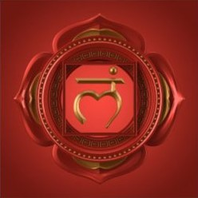
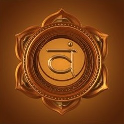
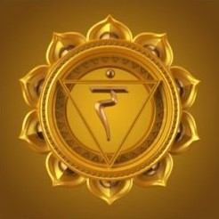
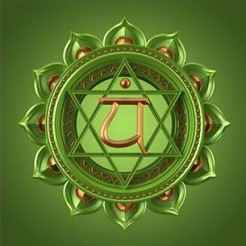
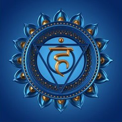
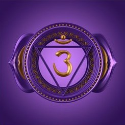
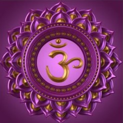

Life Force Energy Explained
Ancient cultures believe in the concept of life force energy. In India, it is called prana; in China, chi; in Japan, ki and for Native Americans, the Great Spirit. The idea of this energy is central to the forms of healing and medicine. The better one takes care of the life force energy within, the healthier and more balanced the individual. Additional information about chi can be found at Energy Arts.
There are seven energy centers in the body that circulate this energy called chakras. Each chakra governs a part of the body in several aspects including spiritual and physical. The results of low or blocked energy flow show as ailments in the body. Maintenance and cleansing of these chakras will help in these ailments by correcting the energy flow of these centers.
The biggest part of Reiki helps balance and cleanse the chakras to keep the life energy optimally flowing. This is done by the reiki practitioner through the manipulation and transference of energy. It can kind of be thought of healing hands or like the laying on of hands some religions practice. Reiki can be hands on or just above the body without touching. There are also ways of distance healing that can be learned.
The following chart helps tell about the chakras. The information in the table came from MindValley.
| Name | Symbol & Color | Location | Role |
|---|---|---|---|
| Root Chakra - Muladhara |  Red | Base of Spine near tailbone to just below belly button | Survival, emotions and finance I AM |
| Sacral Chakra - Svadhishana |  Orange | Right below belly button and extends to its center | Creativity, motivation, pleasure, self, sex I FEEL |
| Solar Plexus Chakra - Manipura |  Yellow | Center of belly button extending to the breastbone | Self-confidence, identity, personal power, intuition I DO |
| Heart Chakra - Anahata |  Green | Center heart down breatbone and up to throat | Love, compassion, kindness I LOVE |
| Throat Chakra - Vishuddha |  Blue | Center between collar bone radiating to center of heart to center of eyes | Speaking your truth with clarity I SPEAK |
| Third Eye Chakra - Ajna |  Indigo | Between eyebrows radiating to mouth and to top of head | Extra Sensory perception, intuition I SEE |
| Crown Chakra - Sahaswara |  Violet-White | Center at top of head radiating down to between brows to the upward and outward connecting to the energy of the universe | Pure consciousness energy I KNOW |
{kind=link}